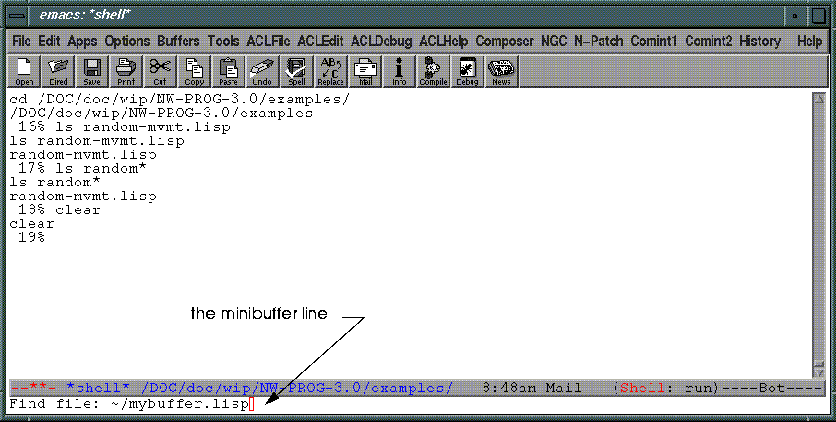

and much, much more, as we shall see.
The next few examples will show you how to manipulate objects in the N·World environment, and provide a little instant gratification.
Opening the Door
xemacs &
We'll explain in detail what all these parts are later. For now, focus on:
2. When Xemacs is loaded, (CLICK-L) on NGC>Run N-World.
4. In N-Geometry, (CLICK-L) on the bodies in the sensitivity bar.
5. (CLICK-L) on the tetrahedron.
6. At the Xemacs Lisp prompt, type 3d:?, followed by ENTER.
#<POLYHEDRON 7>
7. (CLICK-L) on Face in the element sensitivity bar in the Geometry window.
8. (CLICK-L) on a face in your tetrahedron.
9. At the Lisp prompt, evaluate 3d:? again.
#<FACE 1>
#<POLYHEDRON 7>
<EDGE 7>
3d:??? is bound to the third most recently selected object in the World. In this case, it's bound to the polyhedron itself. 3d:?? is now bound to the face we selected in step 9.3d:?, 3d:??, and 3d:??? provide a simple and easy-to-use bridge between what you can see in the Geometry window and Lisp.
1. (CLICK-L) on the Tetrahedron again.
(describe 3d:?).
#<POLYHEDRON 7> is an instance of #<STANDARD-CLASS POLYHEDRON>:
The following slots have :INSTANCE allocation:
PROPERTY-LIST (DRAWBLOCKS
(#<GL-DRAWSELF-DRAWBLOCK for #<POLYHEDRON 9>>) SISTERS T HISTORY #<BODY-HISTORY
@#x189f967a> VERSION (101 9))
ATTRIBUTE-PLIST NIL
SISTERS (#<BDI (Tetrahedron) @ #x189fafda>)
SOURCE-FILE NIL
FLAGS 167343104
SERIAL-NUMBER 9
PROPERTY-CACHE #(2041
#(NIL #(-8.164966 -3.3333335 -4.714045)
#(8.164966 10.0 9.42809) NIL NIL NIL
NIL NIL NIL NIL))
PARTS NIL
STANDIN-BODIES ((:DEFAULT #<POLYHEDRON 10> NIL))
CURRENT-STANDIN :DEFAULT
FACE-RING-BASE #<RING-BASE (FACE)>
SEGMENT-RING-BASE #<RING-BASE (EDGE)>
POINT-RING-BASE #<RING-BASE (VERTEX)>
#<POLYHEDRON 9>
Functions are what you'll use to travel through the Wide Open World. The language you'll speak there is Common Lisp, the only ANSI approved object oriented programming language. Lisp has a large vocabulary of built-in functions, which you can use to build functions of your own. For example:
Defining Your Own Functions
1. (CLICK-L) on the tetrahedron.
3d:? now refers to the tetrahedron. In WOW, we say that 3d:? is bound to it.
(loop for faces in (collect-my-faces 3d:?) do (extrude faces)(move-out faces 5.0))
By typing the Lisp form in step 2, you've created your own function by combining several Lisp functions. Typing in forms directly at the Lisp prompt works well for things you only want to do once. If you want to use this function again, you'll need some way of saving it. You can do this with a Xemacs buffer.
A Xemacs buffer is basically a workspace where you can work on your Lisp code. To create one:
Using Buffers
2. Type mybuffer.lisp on the minibuffer line.

(in-package "3D")
(defun my-extrude (body)
(le::loop+ for faces in (collect-my-faces body) do
(extrude faces)(move-out faces 5.0)))
3. When you've typed in the function, type ALT-CTRL-X.
5. Type :pa 3D at the Lisp prompt.
Error: MY-EXTRUDE got 0 args, wanted 1 arg.
[condition type: PROGRAM-ERROR]
Finding Arguments
What if we can't remember what arguments(my-extrude)requires? Well, it's simple enough, really.
1. At the Lisp prompt, type (my-extrude), but don't press ENTER.
2. With the cursor just to the right of the function, type CTRL-SHIFT-A.
Arglist for: (default my-extrude)
MY-EXTRUDE's arglist: (BODY)
1. (CLICK-L) on the tetrahedron in the Geometry window.
2. At the Lisp prompt, type (my-extrude ?).
1. Switch to the buffer you want to save.
2. (CLICK-L) on File>Save in the Xemacs menu.
Who says programming is hard?? And in WOW, it's not.
Copyright © 1996, Nichimen Graphics Corporation. All rights reserved.